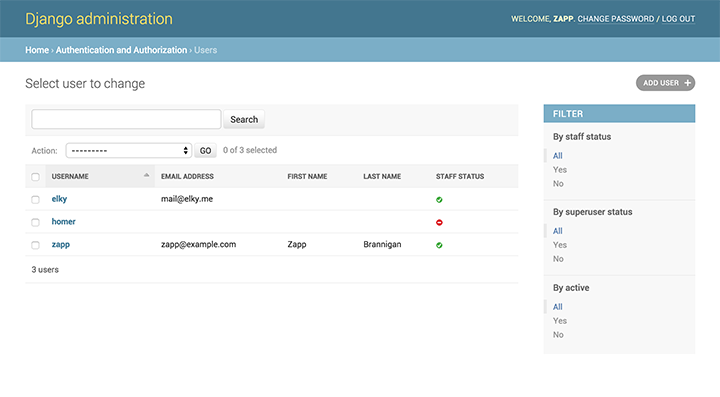

(@HannaKollo, @codeinthehole)
This:
1 def my_view(request):
2 params = request.GET
3 # Lot of code here before returning HttpResponse
4 # ...
5 return HttpResponse("This is a too big view")
could be:
1 from my_project.services import deal_with_data
2
3 def my_view(request):
4 params = request.GET
5 deal_with_data(params)
6 return HttpResponse("We have separated business from view logic")
(@magopian, @RaeKnowler)
More pythonic
1 assert 3 == 4 # instead of self.assertEqual(3, 4)
pytest-django with really interesting runner options:
Use randomised data and find edge cases for you
1 @given(floats())
2 def test_negation_is_self_inverse(x):
3 assert x == -(-x)
(@olasitarska)

| Table of Contents | t |
|---|---|
| Exposé | ESC |
| Full screen slides | e |
| Presenter View | p |
| Source Files | s |
| Slide Numbers | n |
| Toggle screen blanking | b |
| Show/hide slide context | c |
| Notes | 2 |
| Help | h |